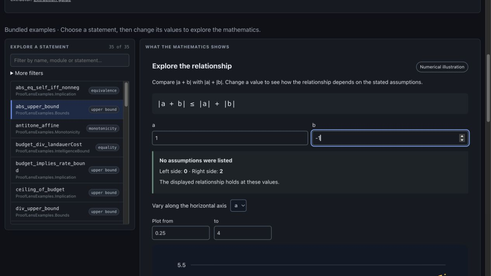

See why a bound still holds
when the values change.
Two inputs can cancel each other. Their combined magnitude gets smaller, while the sum of their individual magnitudes stays the same. ProofLens connects that picture to the Lean statement.
The live browser app requires no installation or account. This companion example runs locally and collects no feedback.
What happens when b changes sign?
Start with a = 1 and b = 1. Then change b to −1. Compare the two sides.
The slider range is a display choice. The Lean statement is over real numbers, without these slider limits.
|a + b|2|a| + |b|2Both inputs point in the same direction. Their magnitudes add, so the two sides are equal.
A sampled picture does not prove the inequality for all real inputs. This companion uses ordinary browser arithmetic and is separate from ProofLens’s extraction and verification machinery.
ProofLens distinguishes extracted proof status, deterministic explanations, author interpretations and numerical illustrations. Pasting Lean source into its browser does not run Lean or check a proof.
Reproduce it in the actual app.
Select abs_upper_bound
Open the live app. Under Explore a statement, choose abs_upper_bound. If needed, filter by name. Set a = 1 and b = 1.
Make b negative
Confirm left side 2 and right side 2. Change b to −1. The left side becomes 0; the right side remains 2. The displayed relationship still holds.
Say what became clearer
Use Why this picture and the original Lean statement to connect the values to the claim. Save explanation and Save chart keep the app’s captions and qualifications.
Feedback is optional. The linked issue is public and needs a GitHub account to submit; use public or synthetic inputs and omit private research and personal information. Completing this example demonstrates interaction, not a measured learning benefit.
Inspect the formal claim.
The bundled declaration delegates its proof to Lean’s triangle inequality theorem. The live app displays a Lean-checked declaration in its bundled extraction, while the chart remains a numerical illustration.
theorem abs_upper_bound (a b : ℝ) :
|a + b| ≤ |a| + |b| :=
abs_add_le a bInspect the pinned Lean source · Read the status-label model
The “signal amplitude” reading comes from author annotations. Lean checks the mathematical statement; it does not establish a physical experiment or validate that interpretation.

6d18d52.What we verified—and what remains unknown
On October 11, the current source revision had seven successful GitHub check runs, including the Lean corpus/end-to-end pipeline and Pages deployment. The non-gating mathlib coverage metric was skipped. The live app displayed 2/2 at a = b = 1 and 0/2 after b became −1.
These are technical readiness observations. They do not establish independent useful use, improved comprehension, repeat use, scientific validity outside the formal statement, or revenue.
The next useful example is yours.
Try a small public or synthetic statement you want to understand. The browser supports a bounded subset of Lean syntax; unsupported forms remain visible gaps. Source previews explain supported statements and do not check proofs.
Try the square-root source-preview walkthrough ↗Build with the project
Report one confusing step, contribute a supported example, or propose a focused visualization. Contributions should preserve the correct status labels, source provenance and DCO sign-offs.